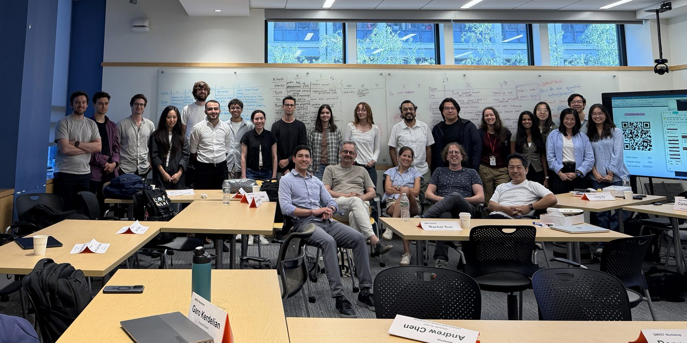

News
-
18 Sep 2026
Kickoff meeting at MIT
The project kickoff was held at MIT, bringing together 5 teams and 24 participants from the five partner institutions.

-
Jun 2026
Project funded through the NSF DMREF program
Our collaborative project on the codesign of highly entangled materials is funded by the U.S. National Science Foundation's Designing Materials to Revolutionize and Engineer our Future (DMREF) program, in partnership with NSERC, spanning five institutions in the U.S. and Canada.